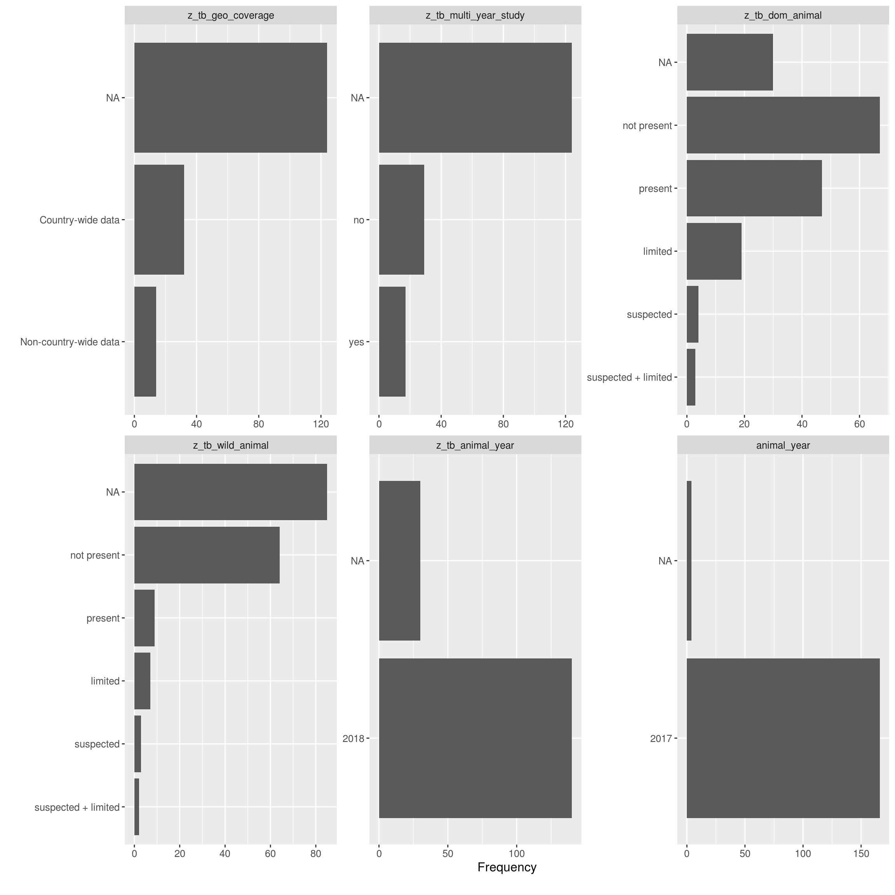

Overview
In this vignette the lastest data for the proportion of TB cases that are zoonotic, along with data on potential correlates, is rapidly explored using an EDA approach modelled on that used in the {DataExplorer} package. This analysis is indicative only and any findings should be evaluated more carefully using more robust techniques.
Data
Latest data available used by default - see data sources and data linkage for details. To instead explore the complete dataset comment out the get_latest_combined_data call and rerun the analysis.
This step also drops variables that are unlikely to be of interest in an initial EDA. This includes: confidence intervals, standard error, country names, country codes, and regions. On top of this countries with fewer than 100 TB cases have been removed, along with countries with incidence rates below 1 per 100,000 population (effective TB elimination). This has been done as data for these countries is unlikely to provide meaningful insights for a global model of zoonotic TB incidence.
Summary
Data table summary
knitr::kable(t(DataExplorer::introduce(latest_data)),
row.names = TRUE,
col.names = "",
format.args = list(big.mark = ","))| rows | 170 |
| columns | 19 |
| discrete_columns | 4 |
| continuous_columns | 15 |
| all_missing_columns | 0 |
| total_missing_values | 784 |
| complete_rows | 33 |
| total_observations | 3,230 |
| memory_usage | 28,488 |
Distributions
Bar Charts
Frequency distributions for all discrete features
DataExplorer::plot_bar(latest_data, theme_config = list("text" = element_text(size = 12)), nrow = 4L, ncol = 3L)
Correlation Analysis
Visualize correlation heatmap for all non-missing features
## Warning in cor(x = structure(list(tb_year = c(2018, 2018, 2018, 2018,
## 2018, : the standard deviation is zeroOnly continuous features
plot <- DataExplorer::plot_correlation(na.omit(latest_data), type = "c") +
theme(legend.position = "none")## Warning in cor(x = structure(list(tb_year = c(2018, 2018, 2018, 2018,
## 2018, : the standard deviation is zero## Warning: Removed 100 rows containing missing values (geom_text).## Warning: Removed 100 rows containing missing values (geom_text).Principal Component Analysis
Drop all factor based variables, as well as time variables and raw incidence variables (as all just correlates of population).
pca_df <- latest_data %>%
dplyr::select(-contains("year"), -population, -tb_cases, -z_tb_id,
-population, -cattle, -z_tb_geo_coverage, -z_tb_wild_animal,
-z_tb_dom_animal) %>%
na.omit
DataExplorer::plot_prcomp(pca_df, variance_cap = 0.9, nrow = 2L, ncol = 2L)